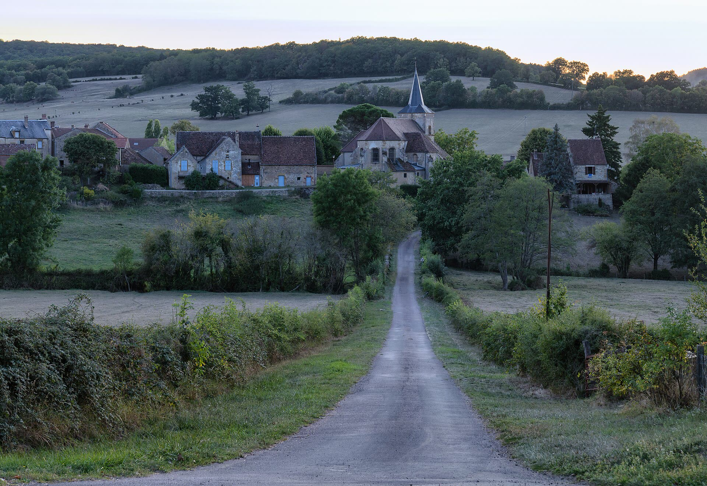
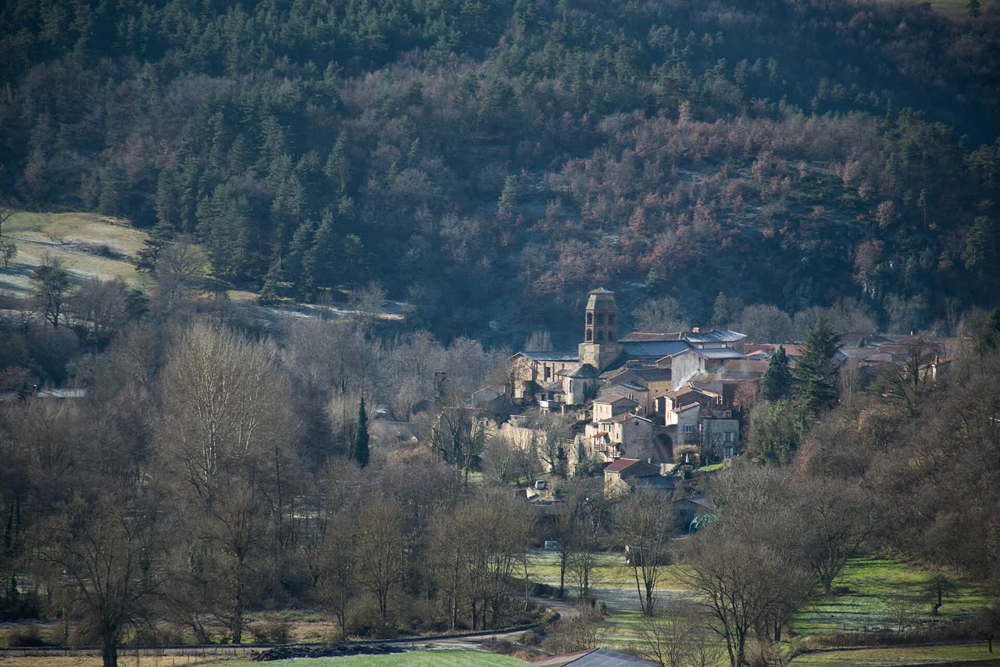
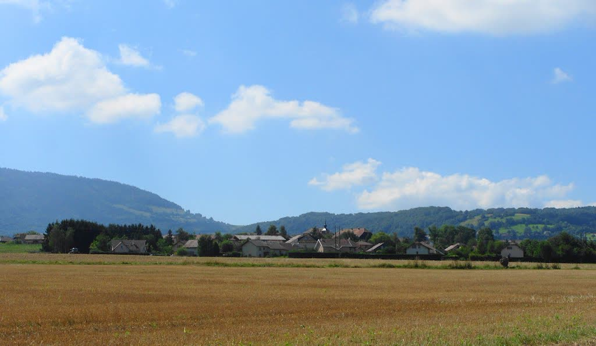
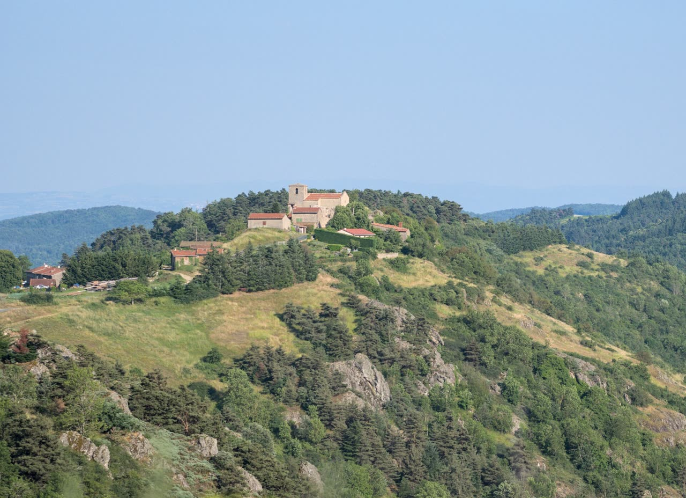
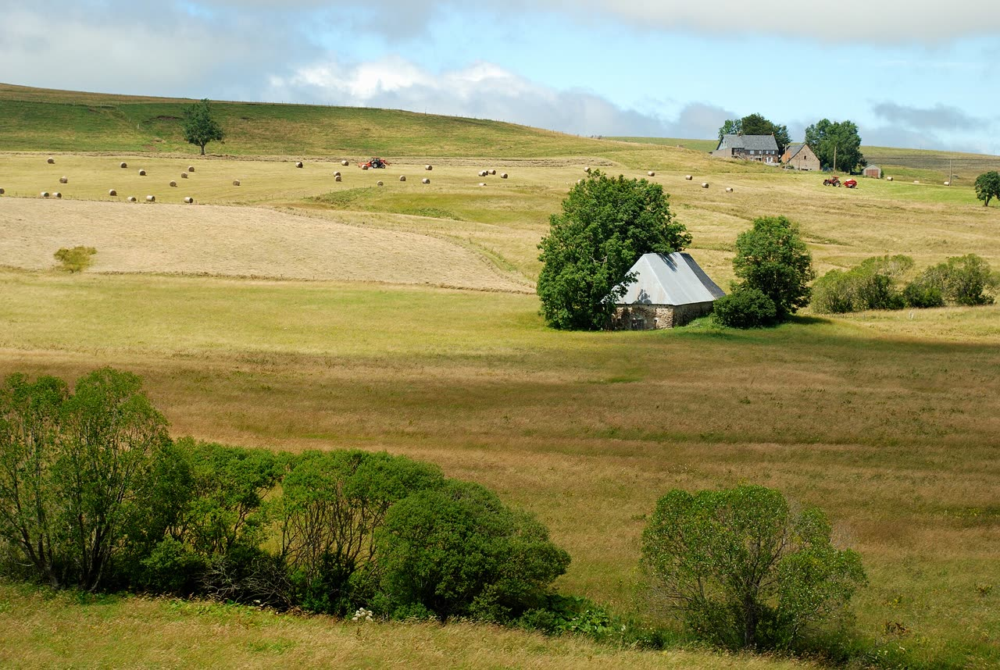
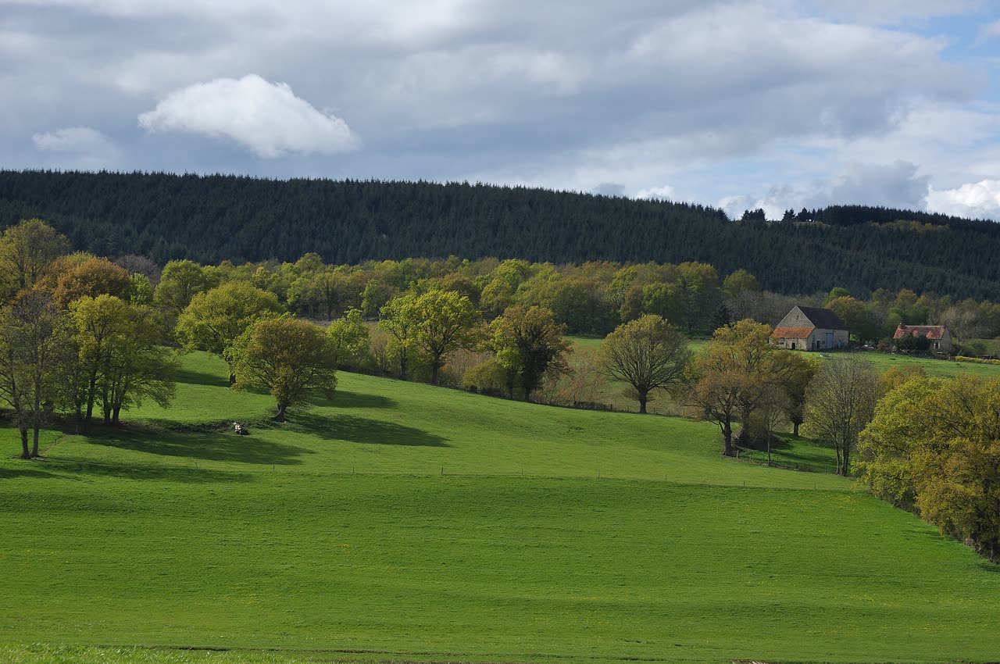
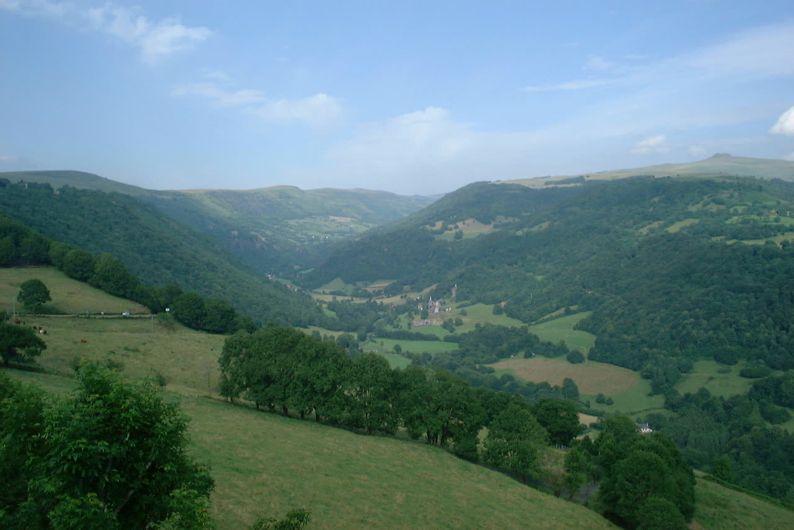

Crédits photos
Les photographies proviennent de Wikimedia Commons. Elles montrent des lieux réels et servent uniquement d'illustration : elles ne représentent pas les communes fictives de la maquette. Certaines ont été recadrées ou redimensionnées.
| Aperçu | Utilisation | Titre original | Auteur | Licence |
|---|---|---|---|---|
 |
Accueil (bandeau) | Bazoches - Vue générale du village avec l'église Saint-Hilaire | Rolf Kranz | CC BY-SA 4.0 |
 |
Commune fil rouge, vue générale | Corancy | LeMorvandiau | CC BY-SA 3.0 |
 |
Commune fil rouge, galerie | Aigueperse | Geo75 (Wikipédia en français) | CC BY-SA 2.5 |
 |
Commune fil rouge, galerie | Plessis-Luzarches, place des Tilleuls | P.poschadel | CC BY-SA 2.0 FR |
 |
Commune fil rouge, mairie-école (recadrée) | Grange-le-Bocage, ancienne mairie-école | François Goglins | CC BY-SA 4.0 |
 |
Annonce : maison de bourg | Barbery (60), rue du Général Patton | P.poschadel | CC BY-SA 2.0 FR |
 |
Annonce : longère | Saint-Rivoal, longère rénovée | Henri Moreau | CC BY-SA 4.0 |
 |
Commerce à reprendre | Rully (60), commerce | P.poschadel | CC BY-SA 2.0 FR |
 |
Résultats : Montchaury | Auvergne, décembre 2018 | Jules | CC BY-SA 4.0 |
 |
Résultats : Les Granges-Vallon | Le village de Feigères | Martial Gaillard-Grenadier | CC BY-SA 3.0 |
 |
Résultats : Bellecombe-en-Forez | Saint-Laurent-Rochefort, colline côté nord-ouest | Romainbehar | CC0 |
 |
Résultats : Saint-Ferréol-des-Monts | Paysage, Jassy | Romary | CC BY 2.5 |
 |
Résultats : Larbois | Noyant, vallée à l'est du village | Gérard Joyon | CC BY 3.0 |
 |
Séjour d'essai (bandeau) | Vallée en Auvergne | Michel | CC BY-SA 3.0 |
Fonds de carte : Esri (relief et fond gris clair), HERE, contributeurs OpenStreetMap. Pictogrammes et icônes : Système de Design de l'État.